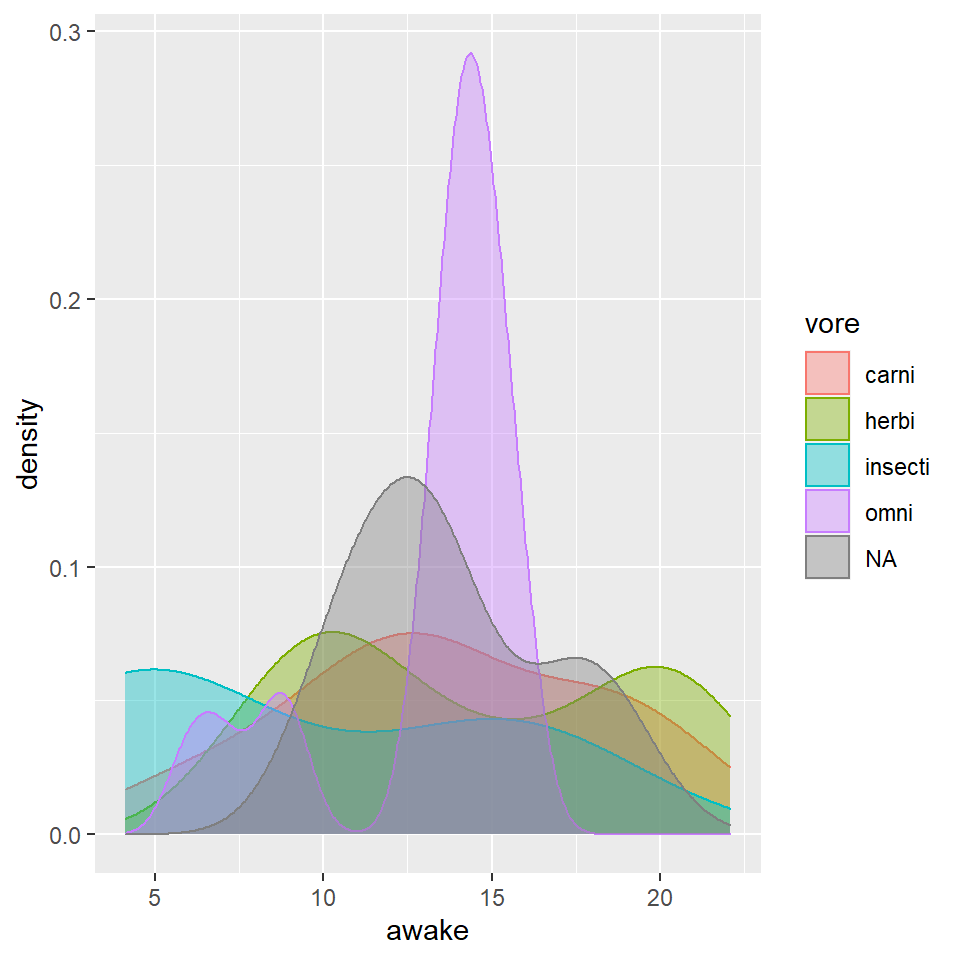

Delete all of this and paste in your own content right here!!
To create a new Portfolio entry, make sure that you selected R Markdown (.Rmd) as the format option of the post when using the New Post blogdown addin.
Make sure you edit the setup chunk above and bring in all packages you need using r library(package_name).
The easiest option is to use the blogdown Insert Image RStudio addin to add an external image.
Another way: use a code chunk, if you already have the image downloaded and ready. Place the image in the same folder as this Post, and link to it with the chunk below:
Start typing/pasting text here.
Diamonds are forever. We can see that from this graph below:

## [1] "name" "genus" "vore" "order" "conservation"
## [6] "sleep_total" "sleep_rem" "sleep_cycle" "awake" "brainwt"
## [11] "bodywt"## # A tibble: 6 x 11
## name genus vore order conservation sleep_total sleep_rem sleep_cycle awake
## <chr> <chr> <chr> <chr> <chr> <dbl> <dbl> <dbl> <dbl>
## 1 Cheetah Acin~ carni Carn~ lc 12.1 NA NA 11.9
## 2 Owl mo~ Aotus omni Prim~ <NA> 17 1.8 NA 7
## 3 Mounta~ Aplo~ herbi Rode~ nt 14.4 2.4 NA 9.6
## 4 Greate~ Blar~ omni Sori~ lc 14.9 2.3 0.133 9.1
## 5 Cow Bos herbi Arti~ domesticated 4 0.7 0.667 20
## 6 Three-~ Brad~ herbi Pilo~ <NA> 14.4 2.2 0.767 9.6
## # ... with 2 more variables: brainwt <dbl>, bodywt <dbl>## # A tibble: 6 x 11
## name genus vore order conservation sleep_total sleep_rem sleep_cycle awake
## <chr> <chr> <chr> <chr> <chr> <dbl> <dbl> <dbl> <dbl>
## 1 Tenrec Tenr~ omni Afro~ <NA> 15.6 2.3 NA 8.4
## 2 Tree s~ Tupa~ omni Scan~ <NA> 8.9 2.6 0.233 15.1
## 3 Bottle~ Turs~ carni Ceta~ <NA> 5.2 NA NA 18.8
## 4 Genet Gene~ carni Carn~ <NA> 6.3 1.3 NA 17.7
## 5 Arctic~ Vulp~ carni Carn~ <NA> 12.5 NA NA 11.5
## 6 Red fox Vulp~ carni Carn~ <NA> 9.8 2.4 0.35 14.2
## # ... with 2 more variables: brainwt <dbl>, bodywt <dbl>## [1] 83 11## [1] TRUE#ENDDDDD